🗺️ サイトマップ / ガイドマップ
xenoah.github.io のページ一覧です。行きたいところへどうぞ。
リンク末尾の は別タブで開くツール・アプリです。それ以外は通常のページとして開きます。
🔴 メイン
📝 Blog記事
-
{% include blog_articles.html %}{% for article in all_articles %}
- {{ article.title | escape }}{{ article.description | escape }}
{% endfor %}
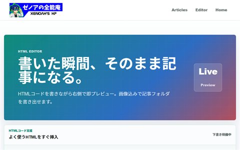
Blog Editorブログ記事作成用の編集ツール- Blog RSSブログのRSSフィード
🔵 プロフィール / 環境
- VRChatについてメタバースでの活動
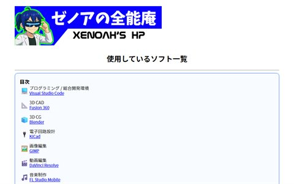
使用しているソフト一覧愛用ツール・制作環境
🟣 3Dモデル配布
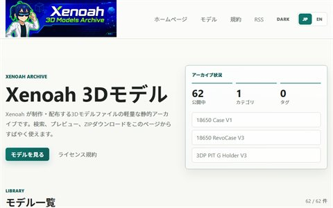
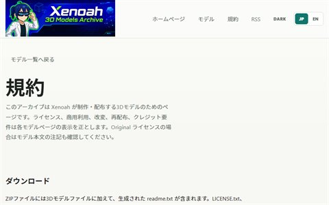
3Dモデル ライセンス規約配布モデルの利用規約
最新モデルハイライト
- 2022残暑見舞いステンシル V6最新モデルハイライト（2026-06-15時点）
- LCDtab Stand V7最新モデルハイライト
- Mawa Hanger Joint V11最新モデルハイライト
🎮 ミニゲーム
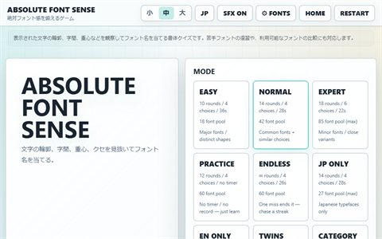
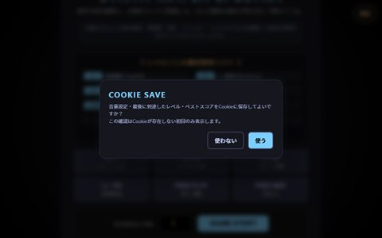
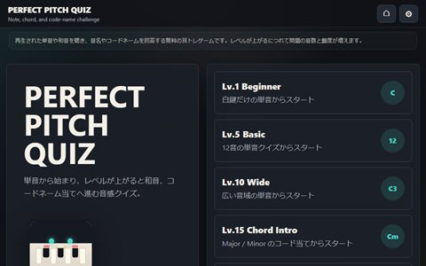
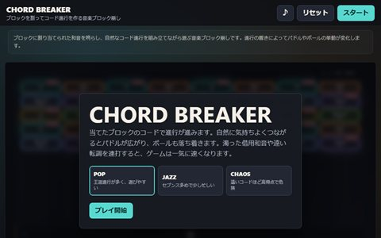
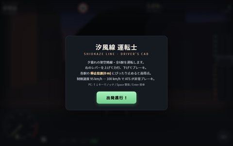
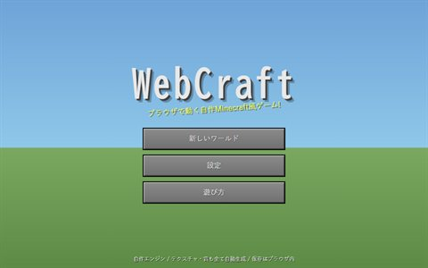
🛠️ 便利ツール
- SeekDeck - WebでDJ音源を端末内で処理する4デッキのブラウザDJアプリ。波形表示、BPM同期、ホットキュー、ループ、EQ・エフェクト、録音に対応
- PortaVek - スマホでドラム・シンセ演奏スマホでドラムとシンセを演奏できるブラウザ楽器。音作り、録音・WAV保存、プリセット保存を端末内で処理
- VoiceMeld - リアルタイム音程補正・ハーモニーマイク音声をMIDI鍵盤・コード・スケールに合わせてリアルタイム補正するブラウザ型ボイスハーモナイザー。最大6声のハーモニーと録音に対応公開サイト準備中（現在はGitHubで参照）［GitHub・ソース ↗］（別タブ）
- ChatGPT RPG Text SFX - 返信に文字送り音（Chrome拡張）ChatGPTの返信表示に合わせてRPG風の文字送り音を鳴らすChrome拡張。4音色と音量・テンポ・音程の調整に対応Chrome拡張機能［GitHub・ソース ↗］（別タブ）
- Chat Avatar - アバターチャット（Chrome拡張）ChatGPTに立ち絵・VRMアバター、読み上げ、音声認識を備えた会話画面を追加するChrome拡張Chrome拡張機能［GitHub・ソース ↗］（別タブ）
- Audio Ayatori - ノード式音声ルーティング（Windows）Windows 10/11用のノード式オーディオ・パッチベイ。マイク・スピーカー・既存の仮想ケーブルを接続し、音声の分岐・ミックス・経路ごとの音量とミュートを設定Windows用アプリ［GitHub・ソース ↗］（別タブ）
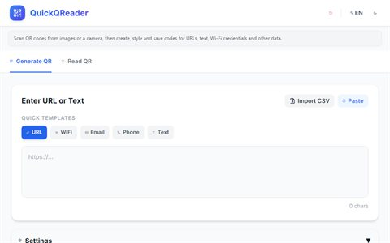
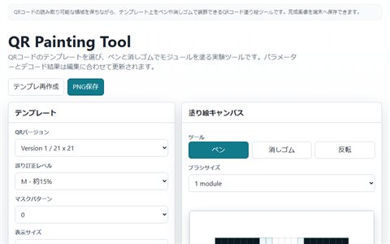
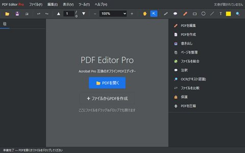
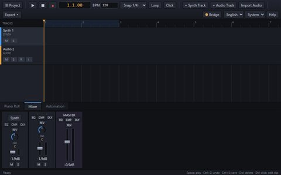
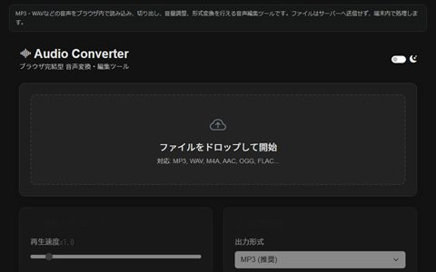
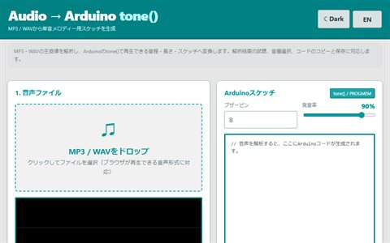
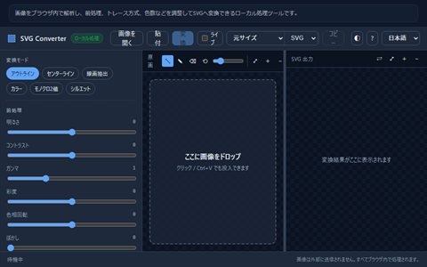
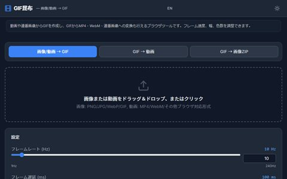
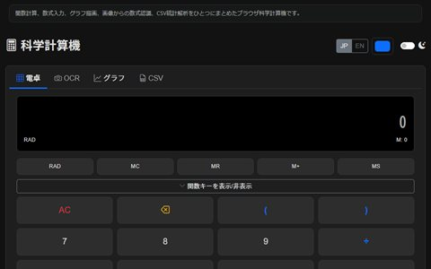
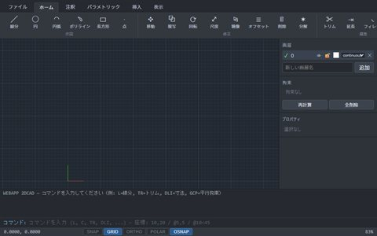
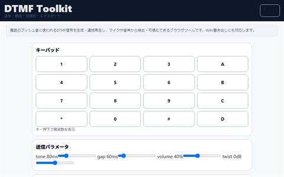
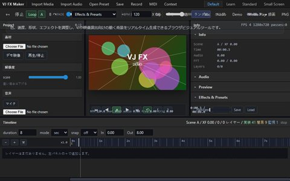
📚 すたでぃー（学習）
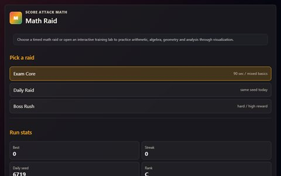
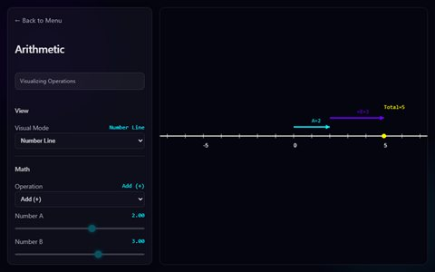
Arithmetic四則演算・基礎計算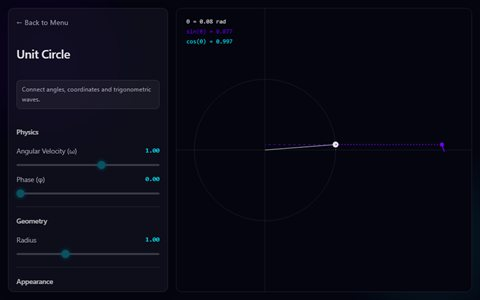
Trigonometry Unit Circle三角関数と単位円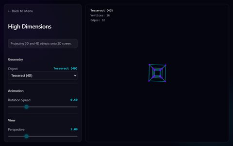
N-D Coordinates3D/4Dオブジェクトの2D投影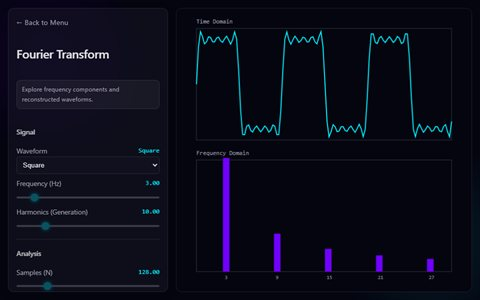
Fourierフーリエ解析の可視化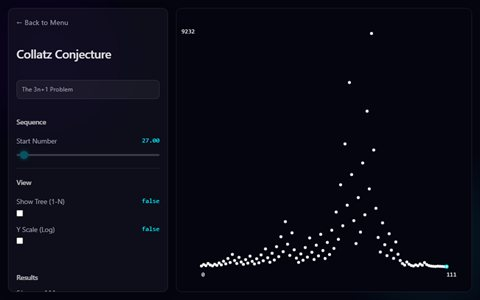
Collatzコラッツ予想の探索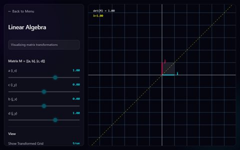
Linear Algebra線形代数の可視化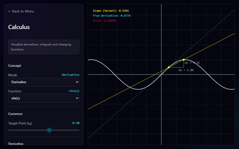
Calculus微積分の可視化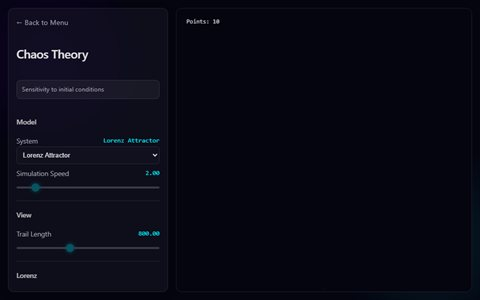
Chaosカオス系のシミュレーション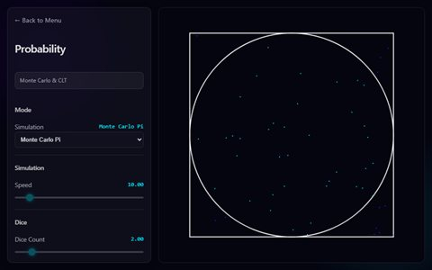
Probability確率の可視化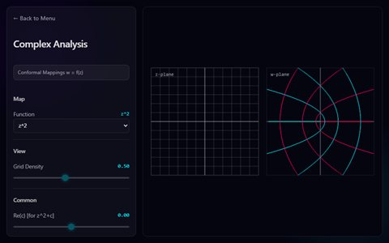
Complex Analysis複素解析の可視化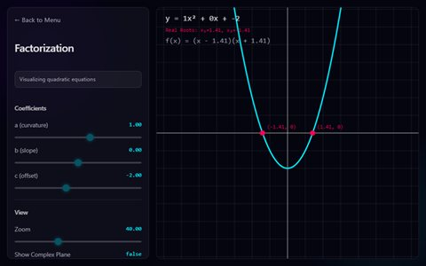
Factorization素因数分解・数の構造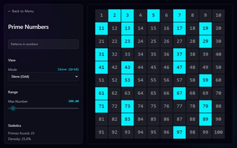
Primes素数の探索と可視化
🗄️ データベース（自分用）
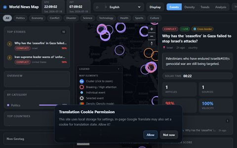
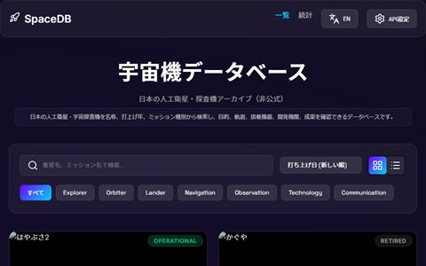
💬 コミュニティ
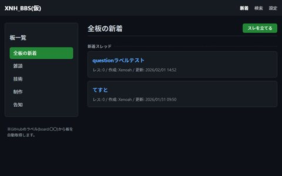